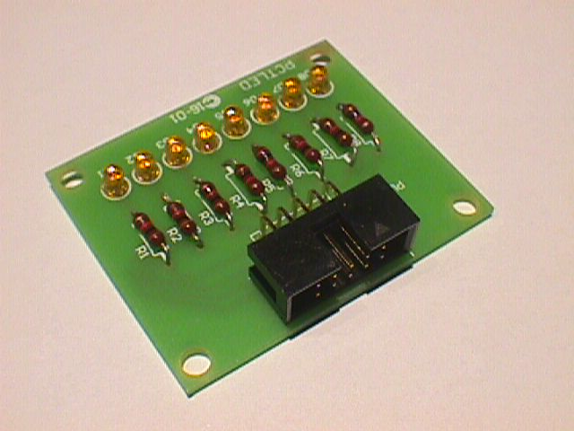
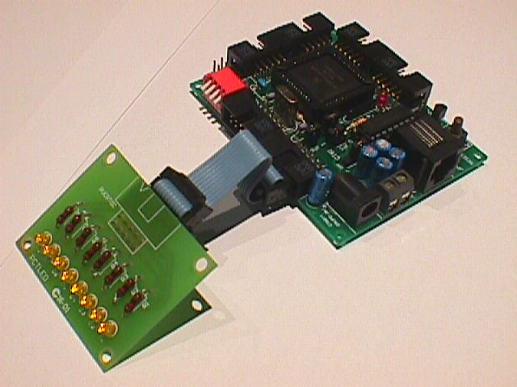
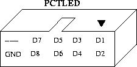

| TARJETA PCT-LED |
| [Introducción] | [caracteristicas] | [Autores] | [Licencia] | [Historia] | [Conexión] | [Download] | [Links] | [Noticias] | [Agradecimientos] |

Tarjeta de prueba con 8 leds y conector para cable de tipo bus, para ser conectada a diferentes placas entrenadoras, aunque fue diseñada inicialmente para conectarse al puerto C de la tarjeta CT6811.
Lo mismo que en el mundo del software el primer programa que se hace es el "hola mundo", para familiarizarse con el entorno y con el lenguaje, esta placa es un "hola mundo" en hardware. Para aprender a trabajar con el programa eagle de diseño electrónico y aprender a realizar diseños de placas industriales, primero se realiz� esta pequeña placa, que además resulta muy útil para hacer depuración en electrónica.
La PCTLED la realizó Andrés Prieto-Moreno en Agosto del 2001 cuando trabajaba en la empresa Pulsar Technologies.
Aunque el PCB y el esquema son correctos, debido a que se trata de una placa a simple cara, hubo un malentendido con el fabricante y el PCB obtenido fue una imagen especular del realmente diseñado. Esto no supone ningún problema puesto que la placa es simétrica. Sin embargo, el conector de bus fue necesario colocarlo en la cara de abajo.
En la siguiente foto se muestra la PCT-LED conectada a una CT6811

La PCT-LED dispone de un conector acodado de 10 pines. En la siguiente foto se muestra la asignación de cada uno de estos pines. Donde Dx hace referencia al Diodo led x, marcado en la serigrafía de la placa.

Cuando se conecta al puerto C de la CT6811, el led indicado como D8 será el de menor peso y el indicado como D1 el de mayor.
| TARJETA PCTLED |
| pct-led-sch.pdf (266KB) | Esquemático en PDF |
| pct-led-pcb.pdf(20KB) | PCB en PDF |
| pct-led-serigrafia.pdf (37KB) | Serigrafías en PDF |
| pctled-eagle.zip (13KB) | Esquemático y PCB para el Eagle. |
| pctled-fabricacion.zip (77KB) | Ficheros en formato GERBER y plano de taladros para la fabricación |
| cable.asm (2KB) | Programa de prueba para la PCTLED conectada al puerto C de una CT6811. |
| cable.s19 (139 Bytes) | Programa Cable. Ejecutable |